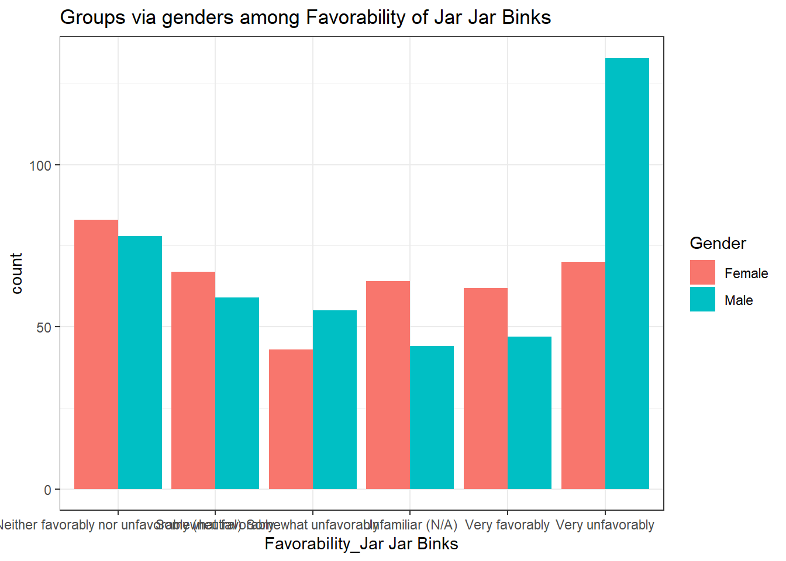
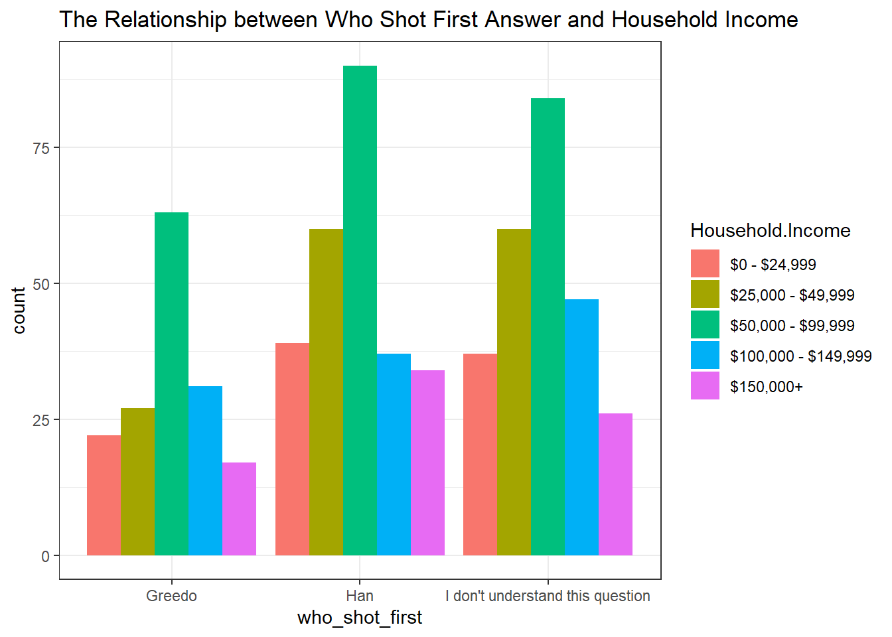
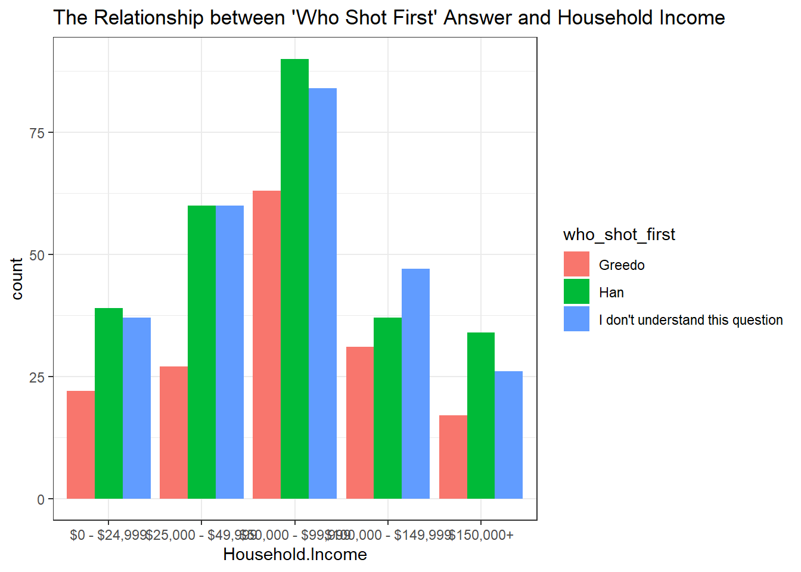

library(tidyverse)
library(mosaic)
library(rio)
library(ggplot2)
sw <- import('https://raw.githubusercontent.com/byuistats/Math221D_Cannon/master/Data/StarWarsData_clean.csv') %>% mutate(Household.Income = factor(Household.Income, levels = c("$0 - $24,999", "$25,000 - $49,999", "$50,000 - $99,999", "$100,000 - $149,999", "$150,000+")))Who Shot First?
Categorical Data Application Activity
Introduction
A long time ago, in a galaxy far, far away, in a wretched hive of scum an viallany, there was an altercation between bounty hunters Han Solo and Greedo. During said altercation, blasters were drawn and shots fired. Greedo ended up as bantha foddor and Solo walked away without a scratch. The question is, who shot first?1
This controversy has roiled Star Wars fandom for the better part of 2 decades. Your answer to the question that question may reveal more about you than you might think.
We will use data from the survey conducted by FiveThirtyEight to answer some crucial questions about the first 6 movies including:
- What proportion of respondents are very favorable towards Emperor Palpatine?
- Are gender and favorability towards Jar-Jar Binks Independent?
- Is response to the question “Who Shot First?” independent of income?
Answer the qestions below and turn in your rendered HTML file.
Data and Analysis
Load the Data and Libraries:
QUESTION: What proportion of respondents are very favorable towards Emperor Palpatine?
names(sw) [1] "Are You a Fan of SW?" "Favorability_Han Solo"
[3] "Favorability_Luke Skywalker" "Favorability_Princess Leia Organa"
[5] "Favorability_Anakin Skywalker" "Favorability_Obi Wan Kenobi"
[7] "Favorability_Emperor Palpatine" "Favorability_Darth Vader"
[9] "Favorability_Lando Calrissian" "Favorability_Boba Fett"
[11] "Favorability_C-3P0" "Favorability_R2 D2"
[13] "Favorability_Jar Jar Binks" "Favorability_Padme Amidala"
[15] "Favorability_Yoda" "who_shot_first"
[17] "Familiar_with_expanded_universe" "are_you_a_fan_of_expanded_universe"
[19] "fan_of_star_trek" "Gender"
[21] "Age" "Household.Income"
[23] "Education" "Location" addmargins(table(sw$`Favorability_Emperor Palpatine`)) # Q: What's the difference between addmargins() and only using table() for one category?
20
Neither favorably nor unfavorably (neutral)
213
Somewhat favorably
143
Somewhat unfavorably
68
Unfamiliar (N/A)
156
Very favorably
110
Very unfavorably
124
Sum
834 table(sw$`Favorability_Emperor Palpatine`)
20
Neither favorably nor unfavorably (neutral)
213
Somewhat favorably
143
Somewhat unfavorably
68
Unfamiliar (N/A)
156
Very favorably
110
Very unfavorably
124 ANSWER: 110 out of 834 people.
Gender and Jar-Jar
Create a clean dataset to explore the relationship between gender and favorability towards Jar-Jar Binks. Make sure to drop all missing values.
unique(sw$Gender)[1] "Male" "Female" "" unique(sw$`Favorability_Jar Jar Binks`)[1] "Very favorably"
[2] "Unfamiliar (N/A)"
[3] "Very unfavorably"
[4] "Somewhat favorably"
[5] "Somewhat unfavorably"
[6] "Neither favorably nor unfavorably (neutral)"
[7] "" jarjar <- sw %>%
select(Gender, `Favorability_Jar Jar Binks`) %>%
filter(Gender != '',
`Favorability_Jar Jar Binks` != '')
glimpse(jarjar)Rows: 805
Columns: 2
$ Gender <chr> "Male", "Male", "Male", "Male", "Male", "…
$ `Favorability_Jar Jar Binks` <chr> "Very favorably", "Unfamiliar (N/A)", "Ve…unique(jarjar$`Favorability_Jar Jar Binks`)[1] "Very favorably"
[2] "Unfamiliar (N/A)"
[3] "Very unfavorably"
[4] "Somewhat favorably"
[5] "Somewhat unfavorably"
[6] "Neither favorably nor unfavorably (neutral)"Use the jarjar dataset and GGPLOT to create a graph that shows the favorability distributions for Female and Male respondents.
Remember, some groupings tell a more understandable story. Try switching the color variable and the x variable and see which grouping makes more sense.
ggplot(jarjar, aes(x = `Favorability_Jar Jar Binks`, fill = Gender))+ # Use fill = "column" to fill the color depends on the column
geom_bar(position = "dodge") + # Use position = "dodge" to have side-by-side effect
labs(
title = "Groups via genders among Favorability of Jar Jar Binks"
) +
theme_bw()
QUESTION: Based on the graph, does it look like there is a difference in favorability distributions between genders?
ANSWER: Yes. In the favorably categories, female tend to have higher favorability than male. On the contrast, in unfavorably categories, male tend to have higher unfavorability than female.
A ‘contingency table’ is a data table that compares two variables.
Create a contingency table for gender and favorability towards Jar-Jar Binks.
addmargins(table(jarjar$`Favorability_Jar Jar Binks`, jarjar$Gender))
Female Male Sum
Neither favorably nor unfavorably (neutral) 83 78 161
Somewhat favorably 67 59 126
Somewhat unfavorably 43 55 98
Unfamiliar (N/A) 64 44 108
Very favorably 62 47 109
Very unfavorably 70 133 203
Sum 389 416 805Create a proportion table that shows the percentage breakdown of males and females within each favorability rating for Jar-Jar Binks. This should sum to 1 across favorability for each gender.
prop.table(table(jarjar$`Favorability_Jar Jar Binks`, jarjar$Gender), margin = 2)
Female Male
Neither favorably nor unfavorably (neutral) 0.2133676 0.1875000
Somewhat favorably 0.1722365 0.1418269
Somewhat unfavorably 0.1105398 0.1322115
Unfamiliar (N/A) 0.1645244 0.1057692
Very favorably 0.1593830 0.1129808
Very unfavorably 0.1799486 0.3197115# margin = 1 is making the row total, = 2 is making the colunmn totalQUESTION: What percent of female respondents are very favorable towards Jar-Jar Binks?
ANSWER: 15.93830%
QUESTION: What percent of male respondents are very favorable towards Jar-Jar Binks?
ANSWER: 11.29808%
Test to see if favorability and gender are independent.
jarjar_table <- table(jarjar$`Favorability_Jar Jar Binks`, jarjar$Gender)
chisq.test(jarjar_table)
Pearson's Chi-squared test
data: jarjar_table
X-squared = 26.577, df = 5, p-value = 6.896e-05\[H_0: \text{The row variable is independent of the column variable}\] \[H_A: \text{The row variable is not independent of the column variable}\]
QUESTION: Based on the results from the Chi-square test, are favorability and gender are independent?
ANSWER: No. Since the p-value is very low (6.896e-05), we can suggest that the favorability is not independent of the gender.
Who Shot First?
Create a clean dataset to explore the relationship between income level and response to the question, “Who Shot First?”. Make sure to drop all missing values.
shot_first <- sw %>%
select(who_shot_first, Household.Income) %>%
filter(who_shot_first != '',
Household.Income != '')
glimpse(shot_first)Rows: 674
Columns: 2
$ who_shot_first <chr> "I don't understand this question", "Greedo", "Han", …
$ Household.Income <fct> "$0 - $24,999", "$100,000 - $149,999", "$25,000 - $49…Use the shot_first dataset and GGPLOT to create a graph that shows the income distribution and response to the question “Who Shot First?”
Remember, some groupings tell a more understandable story. Try switching the color variable and the x variable and see which grouping makes more sense.
ggplot(shot_first, aes(x = who_shot_first, fill = Household.Income)) +
geom_bar(position = "dodge") +
labs(
title = "The Relationship between Who Shot First Answer and Household Income"
) +
theme_bw()
ggplot(shot_first, aes(x = Household.Income, fill = who_shot_first)) +
geom_bar(position = "dodge") +
labs(
title = "The Relationship between 'Who Shot First' Answer and Household Income"
) +
theme_bw()
QUESTION: Based on the graph, does it look like there is a different response profile to “who shot first” for different income ranges?
ANSWER: No. In each income range, the answer ‘Greedo’ is the lowest one and there’s not a lot of difference between the answer ‘Han’ and ‘I don’t understand this question’ answers.
Test to see if income and response to the question “who shot first” are independent.
shot_table <- table(shot_first$Household.Income, shot_first$who_shot_first)
chisq.test(shot_table)
Pearson's Chi-squared test
data: shot_table
X-squared = 6.6702, df = 8, p-value = 0.5726QUESTION: Based on the results from the Chi-square test, are income and response to the question “who shot first” independent?
ANSWER: Yes. Since the p-value (0.5726) is significant higher than alpha value, we can suggest that the average household income is independent to the answer of ‘Who shot first’.
Footnotes
For the definitive answer to the question, see Who Shot First↩︎